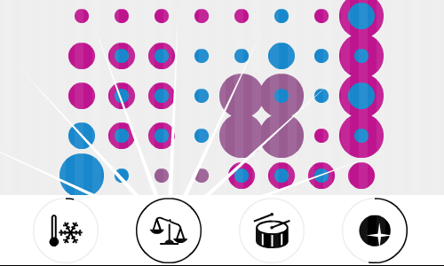

Soy Alejandro Grilli J., un diseñador visual chileno que disfruta experimentando en medios audiovisuales e interactivos, y trabajando en proyectos culturales y educativos. He sido autor de videojuegos, videos y animaciones. Aquí puedes ver una selección de proyectos que he hecho, principalmente personales. Contáctame a través de alejandro¶agj.cl (cambia ¶ por @).
Campodecolor
videojuego 2008

Prototipo para mi proyecto de titulación. Un videojuego experimental que entrega los más mínimos elementos para realizar una composición visual, e intenta hacer una evaluación de sus parámetros compositivos.
Primero haz click en la imagen animada para comenzar. En el centro, un lienzo que puede ser llenado con los círculos de la derecha, arrastrándolos. Abajo, un aproximado (y poco certero, en este prototipo) análisis de algunos valores compositivos: temperatura del color, simetría, ritmo visual y acento visual.
Lee más al respecto.
Un juego controlado por sólo una tecla (espacio), la cual hace saltar al personaje que nunca para de correr. Utiliza Flash. En la pantalla de título, haz click dentro del juego y luego presiona espacio para comenzar.
Diseñado buscando sencillez en control, pero dificultad de ejecución.
(Video por Alexey Zubkov.)
Lee más al respecto (en inglés).
Prosopamnesia
pieza interactiva 2010

Al mover el mouse se revela parcialmente lo que yace debajo de la imagen, pero aquello está constantemente cambiando. Utiliza Flash.
Lleva el nombre de una condición neuropsicológica, en la cual la persona carece de la capacidad de recordar rostros. Mientras está en reproducción, esta obra emplea la búsqueda de imágenes de Google para hallar imágenes de rostros.
Lee más al respecto (en inglés).
Doppelganger
pieza interactiva 2010

Un experimento en Flash que emplea la webcam, reconocimiento de rostros, obtención aleatoria de imágenes desde la web, y una simplísima 'inteligencia artificial' de conversación.
Debido a la naturaleza de esta pieza, necesitas Flash, una webcam, estar conectado a Internet, y tener bastante luz en el rostro, todo esto para que funcione correctamente.
Gracias por darte el tiempo de mirar mi portafolio. Si estás interesado en ver más de lo que hago, te invito a revisar mi blog o mi piclog. Vale repetir que puedes contactarme por medio de alejandro¶agj.cl (cambia ¶ por @).
Ah, y también puedes simplemente volver a agj.cl.


{kind=link}
{kind=link}
{kind=link}
{kind=link}
{kind=link}
{kind=link}
{kind=link}
{kind=link}
{kind=link}
{kind=link}
{kind=link}
{kind=link}
{kind=link}
{kind=link}